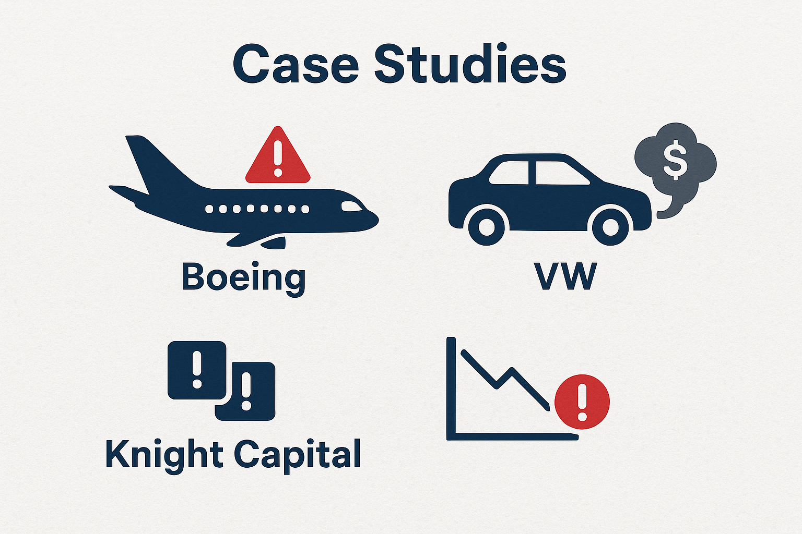
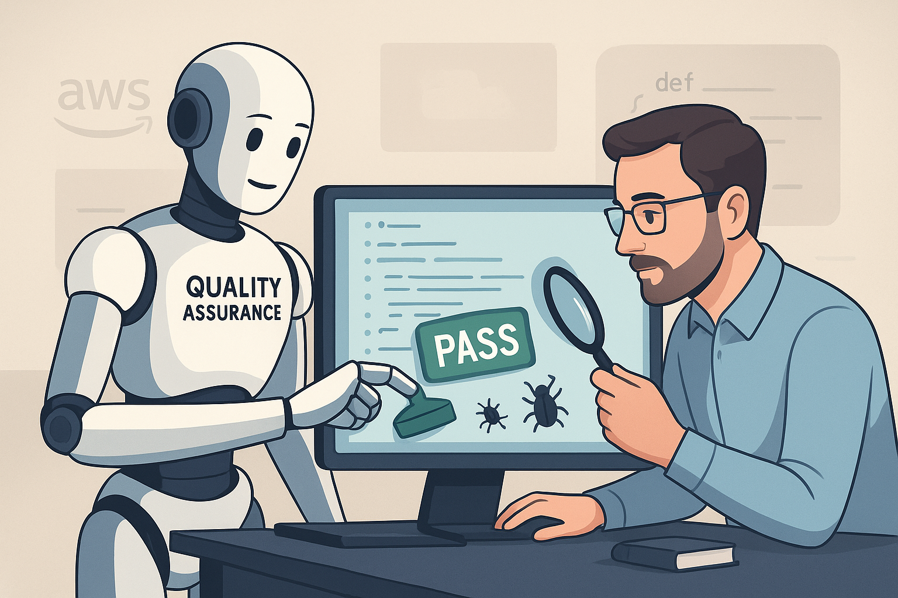
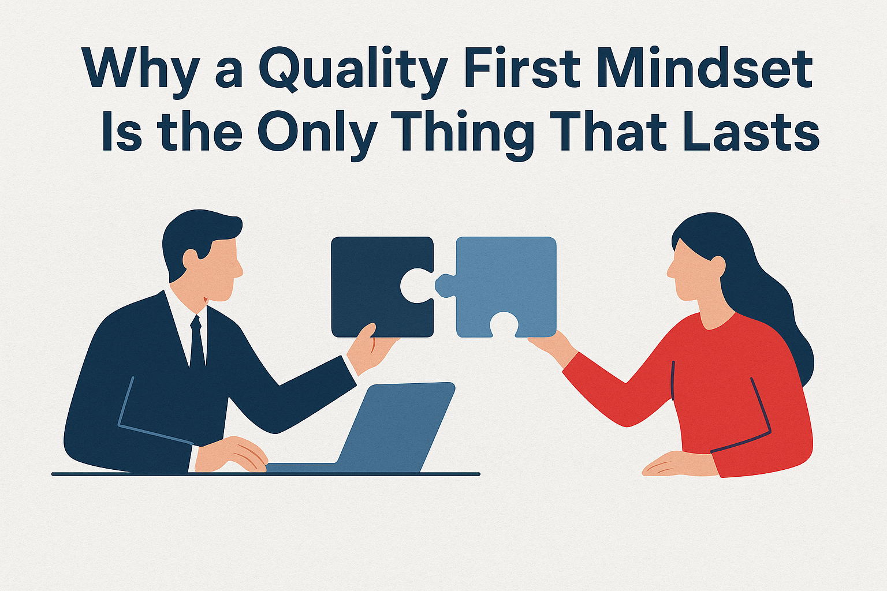

Introduction
Last summer, I almost bailed on a dream family beach trip because some rental site's login was broken, error after error, no matter what browser I tried. That's when it really sank in: in our endless rush-to-ship frenzy, quality isn’t a nice-to-have. It’s the glue that keeps customers from leaving.
With AI everywhere promising to “fix” everything overnight, the temptation to skip hard checks is stronger than ever. Spoiler: it usually backfires. So let me be clear: quality still matters. And customers always notice when it’s missing.
The Decline of Quality
We all got war stories of companies that treated quality like an afterthought, and the fallout was brutal.
Boeing Case Study
There was the Boeing 737 MAX crisis of 2018–2019. They rushed development to keep up with Airbus, slashing safety corners and skimping on rigorous testing. The result? A glitchy flight control system that grounded every MAX plane worldwide, racked up billions in losses, and cost lives. For the first time in two decades, Boeing posted a loss and handed Airbus the top spot in aircraft manufacturing.
Volkswagen Case Study
Volkswagen in 2015, caught red-handed installing "defeat devices" in millions of diesel cars to fake emissions tests. It was all about chasing market share and profits over real standards. The scandal? $30 billion in fines and recalls, and a shredded reputation.
Knight Capital Group Case Study
A software slip from half-baked testing unleashed a glitch that torched $440 million in 45 minutes. Turns out, deploying new code accidentally woke an old zombie routine. One quick peer review pre-deploy could've stopped it cold. Lesson: in high-stakes spots like finance, robust testing is survival.
Travel Disaster Case Study
But nothing beats personal experience to drive it home. Planning a family vacation, we found a beach spot, and I went to a popular rental site to book it. However, I was unable to log in due to multiple error messages. As a QA professional, I tried to debug this—browser swaps, cache nukes—but nothing helped. Fuming, I jumped to a competitor and booked there. Days later, their glitch was still there, costing them our trip money and probably way more from folks like me venting online. Bugs like these aren't footnotes. They are customer exodus triggers.
The real kicker came with flights. I log into this big-name airline site, snag my route, head to checkout, everything smooth until the address field glitches in Chrome, blocking entry. Flip to Firefox? Details go in, but the transaction times out, miles vanish without a ticket. After an hour-long support call, I finally managed to buy through their mobile app. Others I know had the same ordeal. How do you account for these “small” failures? They erode loyalty one frustrated click at a time.
Chasing Speed Without Quality Is a Trap

I've been down this road before—pushed a buggy release to hit a phantom deadline, then drowned in weeks of fire drills and cleanup. Customers? They left us for rivals with apps that didn’t crash mid-checkout. Chasing speed while sidelining quality is like maxing a credit card. First, euphoric rush, then the soul-crushing bill.
But flip it around and quality builds real trust—the kind where folks return and rave about your product. It’s your loyalty snowball. High-caliber work also spares internal chaos: fewer 3 a.m. alerts, lighter support loads, and prouder devs. Great talent gravitates to teams that care about quality. It’s a virtuous loop where wins fuel more wins.
Nintendo Case Study
After the 1983 video game crash nuked trust, Nintendo’s “Seal of Quality” wasn’t hype—it was a lifeline. Strict controls rebuilt faith, snagged 90% of the U.S. console market by 1990, and raked in billions. That seal screamed “this game’s vetted,” turning Nintendo into the gold standard.
Toyota Case Study
Toyota’s Kaizen culture weaves quality from design to delivery. Now it’s synonymous with reliability and die-hard customer loyalty. Quality as moat, not checkbox.
Enter the Quality First Mindset

Defining a Quality First Mindset means prioritizing quality in every stage of work—from concept to delivery. By embedding quality throughout the SDLC, teams reduce rework costs and catch issues early. Studies from NIST show defect costs skyrocket the later they’re found, making early detection crucial.
Cultural Shift
Living a Quality First Mindset isn’t about KPIs or buzzwords. It’s daily habits—catching problems early, collaborating across teams, and celebrating prevention. When people own quality, pride replaces blame.
Organizational Shift
To make this real, leadership must buy in from the start. Define a clear Quality Vision aligned to business goals, involve employees, and celebrate wins. Quality culture sticks when it’s visible in leadership behavior, not just policy.
Quality as a Team Sport
Quality can’t live in a silo. When QA, dev, and product collaborate early, late-breaking issues plummet. Accountability thrives when the whole team owns outcomes—not just QA. True quality comes from shared responsibility and open communication.
Quality in the Age of AI and Automation
AI can supercharge quality—but it can’t replace judgment. Automation catches regressions, but if your inputs are sloppy, AI just helps you make mistakes faster. “Garbage in, garbage out.”
The balance is key: let AI handle the repetitive stuff and free humans to do what we do best—ask “what if?” and explore the messy edge cases automation misses. Together, humans and AI deliver both speed and depth.
Do Customers Really Care About Quality?
Some say customers don’t care—they just want features fast. Maybe once. But not anymore. People might forgive a hiccup or two, but they won’t tolerate broken experiences. Being first to market means nothing if users leave first, too. Speed wins attention; quality wins loyalty.
How to Start a Quality First Mindset
- Shift left: Test early—from design through delivery.
- Measure what matters: Track real user happiness, not vanity metrics.
- Celebrate catches: Finding issues early is a win.
- Pair up: Encourage devs and testers to collaborate closely.
Conclusion: Is Quality Still a Thing?
So, is quality still a thing? Absolutely. Boeing, Volkswagen, and Knight Capital learned the hard way. Toyota and Nintendo built empires on it. Speed and profit win headlines, but quality wins loyalty. You can buy speed. You can buy talent. But you can’t buy back trust once it’s gone. Quality is still THE thing—and it’s the only thing that lasts.